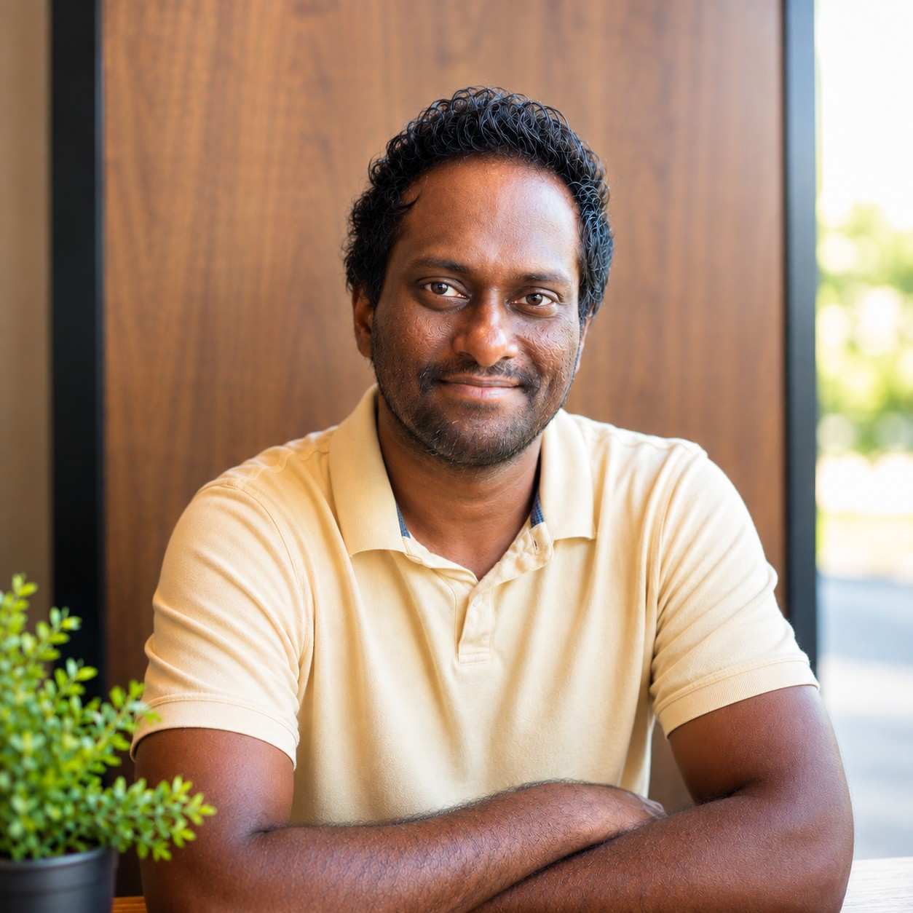

Short Bio
I am a Postdoctoral Researcher at the University of Central Florida. I earned my Ph.D. in Electrical Engineering from the University of Central Florida, titled ”High-Performance Computational Kernels for Algorithm-System Co-Design in Machine Learning: Enabling Efficient GCN Training and LLM Inference Serving.”, under the supervision of Dr. Jun Wang at Computer Systems Architecture and Data Science Lab. I have developed a strong foundation in Large Language Models (LLMs) and Graph Convolutional Networks (GCNs). My research focuses on hardware-software co-design of Machine Learning systems. I hold Master's degree in Computer Engineering from University of Central Florida and Master's degree in Electrical Engineering from Louisiana Tech University. I earned my bachelor's degree in Electrical Engineering with a minor in mathematics from Louisiana Tech University.
Research Interests
- High-Performance GPU Computational Kernels
- Hardware-Software Co-Design in Machine Learning Systems
- GCN training in a Hardware-Contained environment
- Fault tolerance in LLMs
- Computer Architecture
- Energy-efficient AI Accelerator Design
Publications
- [MLSys’26] Jayakody, S.*, Zhao Y.*, Nehate, C., & Wang, J. GhostServe: A Lightweight Checkpointing System in the Shadow for Fault-Tolerant LLM Serving. 2026 Conference on Machine Learning and Systems. (* Equal contribution.) (accepted, publication pending)
- [ICMLA’25] Pinnock, A*, Jayakody, S.*, Roxy, K. A., & Ahmed, Md. R. EdgeProfiler: A Fast Profiling Framework for Lightweight LLMs on Edge Using Analytical Model. 2025 IEEE 24th International Conference on Machine Learning and Applications. (* Equal contribution.) (Paper accepted, publication pending.)
- [ASAP’25] Jayakody, S., Zhao Y., & Wang, J. AIRES: Accelerating Out-of-Core GCNs via Algorithm-System Co-Design. IEEE 36th International Conference on Application-specific Systems, Architectures and Processors, pp. 1-8, doi: 10.1109/ASAP65064.2025.00011.
- [MLArchSys’24] Jayakody, S., & Wang, J. (2024). Peridot: Accelerating Out-of-Core GCN Data Reuse Pattern and Co-Design on GPU. In Machine Learning for Computer Architecture and Systems 2024.
- [CIC’23] Jayakody, S., & Wang, J. EMBARK: Memory Bounded Architectural Improvement in CSR-CSC Sparse Matrix Multiplication. IEEE 9th International Conference on Collaboration and Internet Computing, pp. 8-17, doi: 10.1109/CIC58953.2023.00012.
Instructor and Teaching Assistant
Department of Electrical and Computer Engineering, University of Central Florida, Orlando, FL
Instructor for undergraduate courses:
- Digital Systems Lab (Fall 2020 and Summer 2021)
- Electronics I Lab (Fall 2021)
- Embedded Systems Lab (Spring 2022, Fall 2022, Spring 2023, Summer 2023, and Spring 2024)
- Computer Organization Lab (Fall 2023, Spring 2024, and Summer 2024)
- Electrical and Computer Engineering Design Lab (Summer 2024, Fall 2024, and Spring 2025)
Teaching assistant for undergraduate courses:
- Engineering Analysis and Computation (Spring 2021, Summer 2021, and Fall 2022)
- Computer Architecture (Fall 2021)
- Massive Storage and Big Data (Spring 2022, Fall 2022 and Fall 2024)
- Digital Signal Processing Fundamentals (Summer 2023)
- Computer Organization (Fall 2023)
- Topics in Machine Learning (Fall 2024)
- Introduction to Deep Learning (Spring 2025)
- Engineering Applications of Intelligent Systems Electrical and Computer Engineering (Spring 2025)
News and updates
| Jan. 2026: | Paper accepted at MLSys '26 from Computer Systems Architecture and Data Science Lab |
| Dec. 2025: | Graduated with Ph.D. in Electrical Engineering from the University of Central Florida |
| Oct. 2025: | Postdoctoral research position accepted at Computer Systems Architecture and Data Science Lab (6 months contract) |
| Sep. 2025: | Paper accepted at IEEE ICMLA '25 |
| May 2025: | Paper accepted at IEEE ASAP '25 from Computer Systems Architecture and Data Science Lab |
| Dec. 2024: | Graduated with MSc. Computer Engineering from the University of Central Florida |
| Aug. 2024: | Passed Ph.D. candidacy exam |
| May 2024: | Paper accepted at MLArchSys '24 from Computer Systems Architecture and Data Science Lab |
| Nov. 2023: | Passed Ph.D. qualifying exam |
| Sep. 2023: | Paper accepted at IEEE CIC ’23 from Computer Systems Architecture and Data Science Lab |
| May 2020: | Graduated with MSc. Electrical Engineering from Louisiana Tech University |